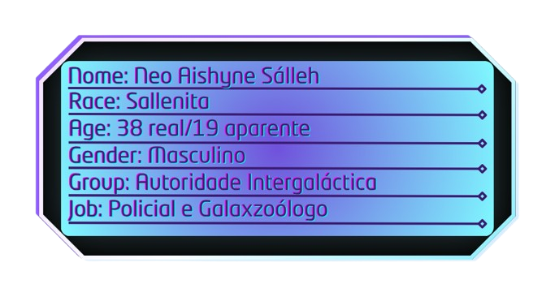
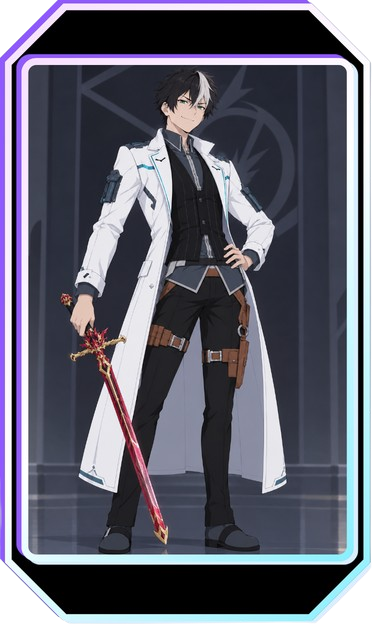
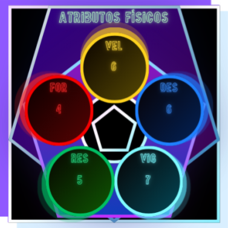
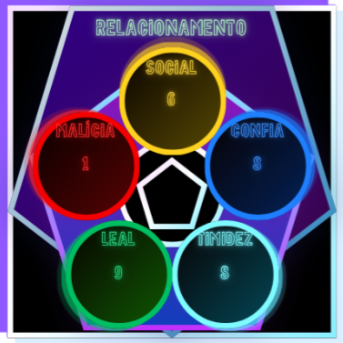
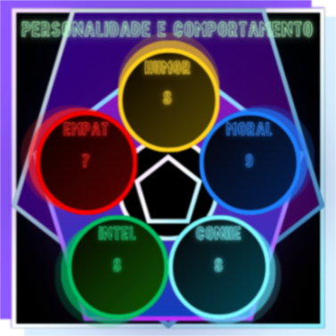
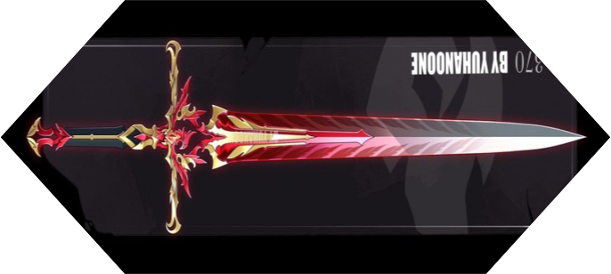
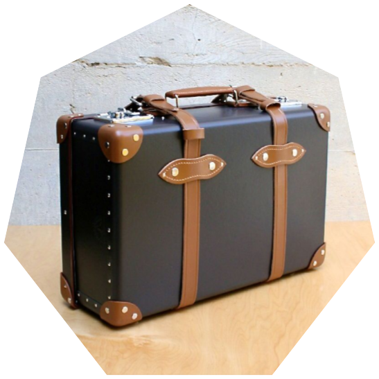

| Equipamento | Elemento Sinérgico | Habilidade | Limite |
|---|---|---|---|
| Asa Fênix | Fogo | Burning Slash. Rajada de fogo em forma de corte.
Causa 25 de dano. |
Custa 10pts de éter |
| Maleta do Alvo Protetor | Yin, Yang, Terra | Capacidade de armazenar seres vivos e gerar automaticamente um habitat natural. | Nenhum custo por criatura.
Não gera alimentos. |


Atributos




Equipamentos


Etereocinese
Conhecimento Mágico - Kaster
Todo seu conhecimento do Kaster foi baseado em grimórios. Conhece magias fixas e prontas para a maioria das situações cotidianas.
Em questões de combate, Neo costuma depender da Asa Fênix, mas, tendo os elementos Fogo e Água, consegue combinar as magias para acessar o elemento Gelo.
Não possui conhecimento em Manipulação de Éter.
Magias Decoradas:
- Gama Bubble: defende ataques menores que 20 de dano, 30 contra Fogo. / Derivação via Gelo - Gama Icy Bubble: defende ataques menores que 30 de dano, 20 contra Fogo.
- Gama Splash: 20 de dano / Derivação via Gelo - Gama Icy Splash: 30 de dano.
- Gama Flame: 25 de dano.
- Gama Self-Cure: 10 de recuperação de PV a si.
- Gama Out-Cure: 10 de recuperação de PV ao outro.
.png)
Sistema de Poder